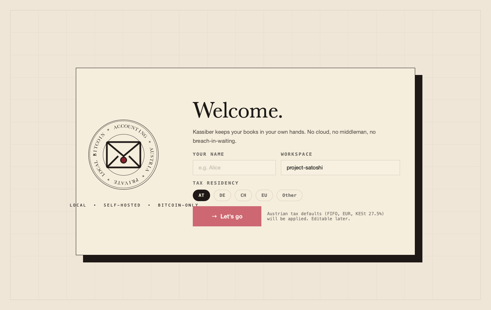
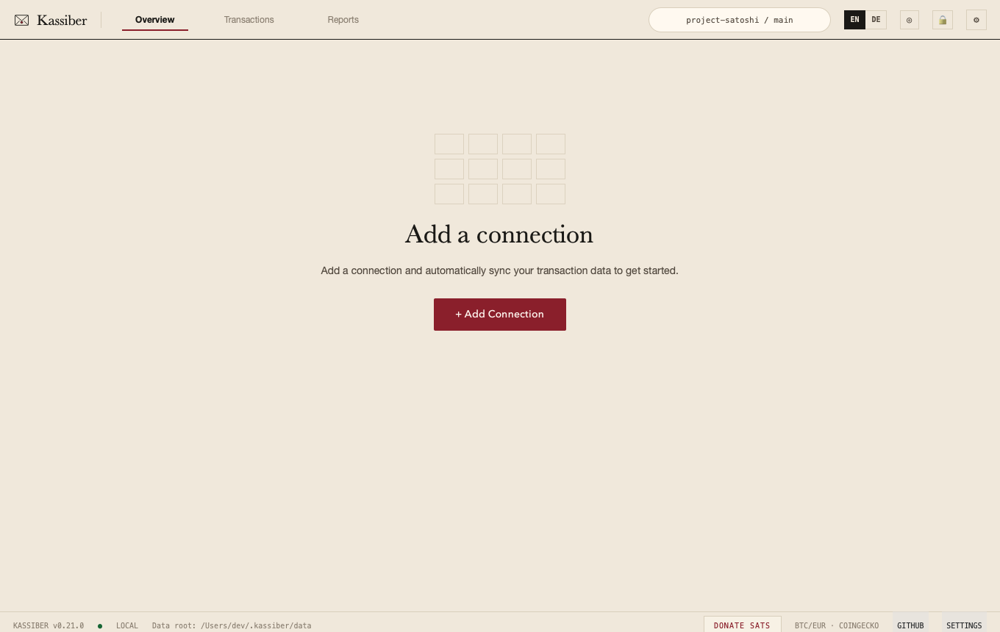
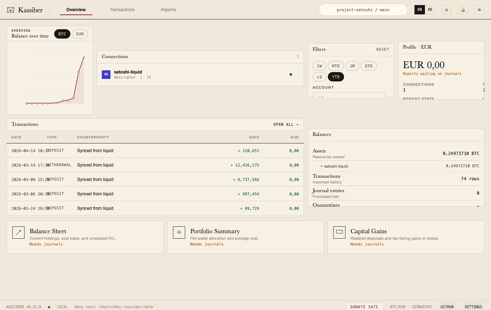
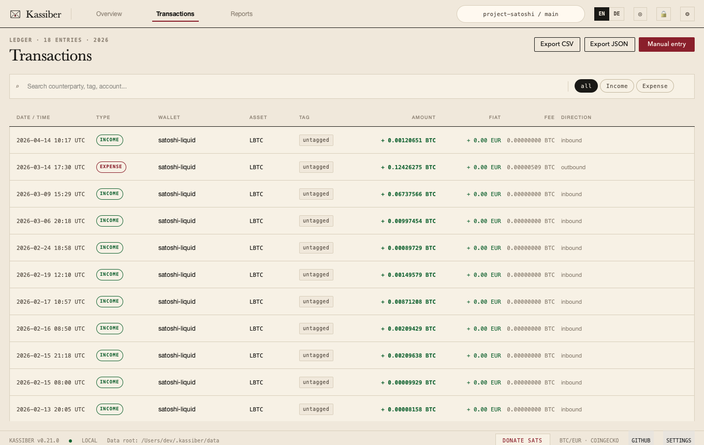
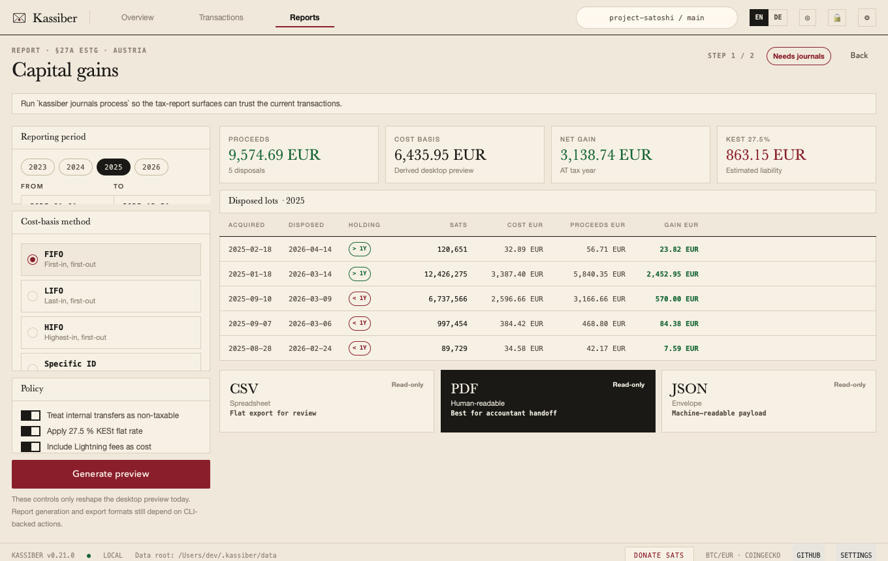
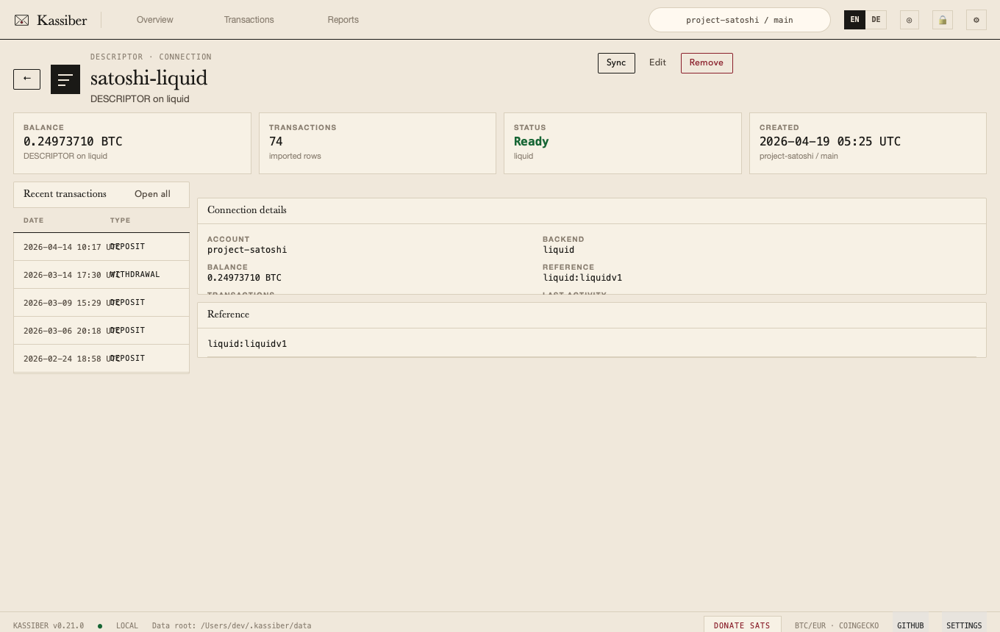
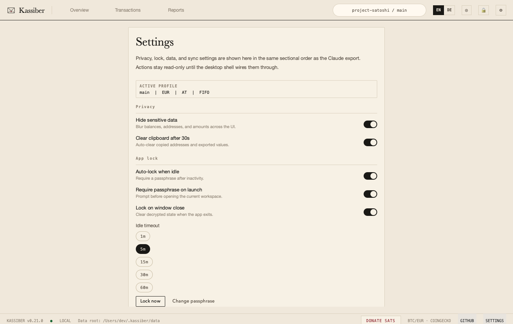

This is the screenshot comparison loop for the Claude export. Drop named screenshots into the reference directory and rerun this script to compare them against fresh QML captures automatically.






